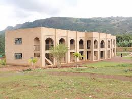
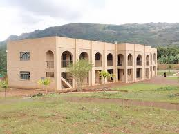
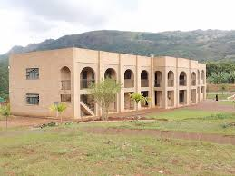

Landmarks
Eswatini is home to many iconic landmarks, from historical sites to natural wonders. Here are some of the most famous landmarks:
.jpeg "Nsangwini Rock Art") 

.jpeg "Mlilwane Game Sanctuary")
Monarchy
King Mswati III: He has been the king since 1986 and holds supreme executive, legislative, and judicial powers. The king is also known as the Ngwenyama (Lion).
Ndlovukati:> The queen mother or a female relative who serves as a spiritual and national figurehead alongside the king.
Traditional Ceremonies
Incwala (First Fruits Ceremony): This is the most significant cultural event in Eswatini, held annually around December. It involves rituals to thank the gods for the harvest and to bless the king.
Umhlanga (Reed Dance): An annual event where thousands of young maidens gather to celebrate their purity and present reeds to the queen mother. It’s a colorful and vibrant festival showcasing Swazi customs.
Economic Overview
GDP Growth: Eswatini's economy grew from 0.5% in 2022 to an estimated 4.8% in 2023, driven by a stronger performance in the services sector.
Per Capita GDP: The GDP per capita was approximately $3,823 in 2023.
Main Sectors: The economy is slightly more than half services, with industry (particularly manufacturing) comprising another third.
Siswati
National Language: Siswati (also known as Swazi) is the national language and is spoken by the majority of the population.
Usage: It is used in everyday communication, education, and media.
Cultural Importance: Siswati plays a crucial role in preserving Swazi culture and traditions.
1. Swazi
Population: The majority of the population is ethnic Swazi.
Culture: The Swazi people have a rich cultural heritage, with traditional ceremonies, music, and dance playing a significant role in their society.
Eswatini is home to many iconic landmarks, from historical sites to natural wonders. Here are some of the most famous landmarks:

Mbabane
Lobomba
South Africa has several well-known universities, including:
South Africa has a number of key ministers in its government. Here are some of the prominent figures:
Owen Nxumalo
Neal Rijkenberg
Jane Mkhonta-Simelane
.jpeg "Neal Rijkenberg")
.jpeg "Jane Mkhonta-Simelane")
Recent GDP Performance
2023: Eswatini's GDP grew by an estimated 4.8%. This growth was driven mainly by a stronger performance in the services sector1.
2022: The GDP growth rate was 3.91%, representing a change of 183 million USD over 2021.
2021: The economy expanded by 2.5%, marking a return to positive growth after a contraction in 2020.
2020: The GDP shrank by 1.2%, the first decline in recent years due to the pandemic.